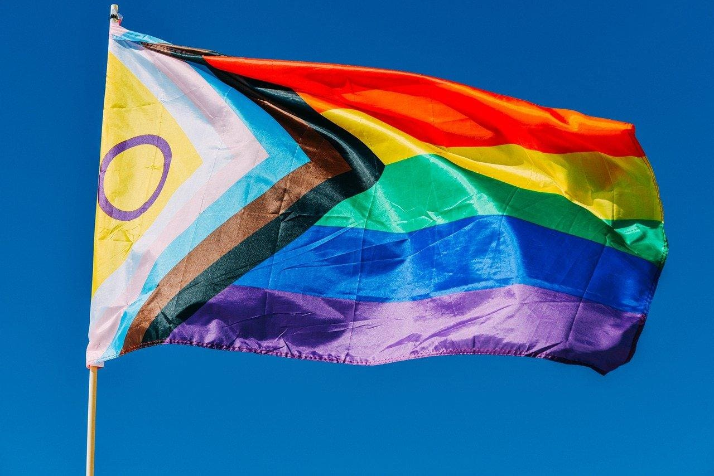

Com mais de 40 mil assinaturas no Senado, coalizão nacional lança dossiê e exige aprovação do Estatuto LGBTQIA+

Bandeiras e mobilização pelo Estatuto LGBTQIA+ em frente ao Congresso Nacional em Brasília
Articulação reúne juristas, especialistas em saúde e organizações da sociedade civil em um documento técnico de 70 páginas para blindar 19 milhões de brasileiros em lei federal definitiva contra retrocessos no STF, no Executivo e no Parlamento.
SÃO PAULO e BRASÍLIA — Impulsionada por mais de 40 mil assinaturas validadas na plataforma e-Cidadania do Senado Federal, uma coalizão nacional formada por juristas, epidemiologistas e especialistas em saúde coletiva e segurança pública lançou uma ofensiva legislativa para exigir a votação e aprovação do Estatuto Nacional dos Direitos da População LGBTQIA+. Com a expressiva adesão popular, o movimento já superou com folga a meta regimental de 20 mil apoios exigida pela Casa, garantindo que o texto passe a tramitar formalmente como Sugestão Legislativa (SUG) perante a Comissão de Direitos Humanos e Legislação Participativa (CDH) do Senado.
A mobilização chega ao Congresso Nacional respaldada por um dossiê técnico-científico e jurídico de 70 páginas — disponível na íntegra no portal oficial da campanha, em estatutolgbtqiamais.com.br e no leitor online oficial do documento —, desenhado para converter garantias civis hoje precárias em lei ordinária definitiva. A iniciativa ganha força tática no Parlamento após a pauta registrar avanços expressivos na Câmara dos Deputados e no Senado Federal. Diante da dispersão de projetos de lei avulsos, o Estatuto propõe consolidar em um único microssistema legal todas as salvaguardas em direito de família, segurança pública, saúde, educação e trabalho.
O pilar demográfico da proposta baseia-se no maior levantamento de diversidade sexual e de gênero já conduzido na América Latina, realizado por pesquisadores da Unesp e da USP com amostragem de campo do Instituto Datafolha e publicado na prestigiada revista científica Nature Scientific Reports. O estudo atesta que 12% da população adulta do país — cerca de 19 milhões de cidadãos, ou um em cada oito brasileiros adultos — pertence à comunidade LGBTQIA+. Desse total, quase 3 milhões de adultos (1,88%) são pessoas transgênero ou não binárias distribuídas de maneira uniforme por todas as macrorregiões brasileiras, e 93,5% das pessoas assexuais identificadas são mulheres historicamente submetidas à invisibilidade clínica. Na avaliação dos especialistas, um contingente de 19 milhões de cidadãos exige um marco legislativo próprio e robusto, a exemplo do que já ocorre com o Estatuto da Criança e do Adolescente, o Estatuto da Pessoa Idosa e o Estatuto da Igualdade Racial.
A "ilusão da lei": vulnerabilidade do casamento civil e das famílias homoafetivas
O diagnóstico técnico do dossiê revela que praticamente nenhum dos direitos civis usufruídos pela população LGBTQIA+ nas últimas décadas foi chancelado pelo Congresso Nacional. Na prática, milhões de arranjos familiares permanecem sob a tutela precária de decisões pretorianas do Supremo Tribunal Federal (STF), de provimentos administrativos do Conselho Nacional de Justiça (CNJ) e de portarias ministeriais — atos infralegais passíveis de suspensão ou revogação diante de oscilações políticas ou mudanças na composição dos tribunais.
Essa fragilidade reflete-se diretamente no Direito das Famílias. Conforme a pesquisa Estatísticas do Registro Civil divulgada pelo IBGE, o Brasil atingiu o recorde histórico de 12.187 casamentos civis entre pessoas do mesmo sexo em 2024 (crescimento de 8,8% em relação ao ano anterior, sendo 64,6% entre mulheres). Contudo, a redação literal dos artigos 1.514 e 1.723 do Código Civil de 2002 ainda define casamento e união estável exclusivamente como a associação entre "homem e mulher". Foi esse vácuo na lei escrita que permitiu que a Comissão de Previdência, Assistência Social, Infância, Adolescência e Família da Câmara aprovasse o parecer favorável ao Projeto de Lei nº 5.167/2009, que visa a proibir expressamente e invalidar o casamento homoafetivo no país.
Para encerrar a instabilidade jurídica, o Estatuto substitui no Código Civil a terminologia restritiva pela expressão “duas pessoas, independentemente de orientação sexual, identidade de gênero ou características sexuais”. O texto blinda expressamente em lei a meação de bens, o direito sucessório de herança, pensões por morte na Previdência Social (INSS) e em regimes próprios, inclusão em convênios de saúde e adoção conjunta. A proposição assegura ainda na CLT licenças parentais integrais — garantindo o direito à mãe não gestante e a homens trans gestantes — e institui o registro civil direto em cartório de dupla maternidade, dupla paternidade e multiparentalidade, inclusive decorrentes de reprodução assistida, sem necessidade de ação judicial prévia.
Ao detalhar as motivações por trás da mobilização que já ultrapassou 40 mil apoios no Senado, Thales Azevedo, autor da Ideia Legislativa, destaca a urgência de uma proteção legal consolidada:
“Essa mobilização nasceu da convicção de que nossos direitos não podem depender exclusivamente de interpretações judiciais, que podem ser questionadas ou mudar diante de cenários políticos desfavoráveis. Precisamos de garantias expressas na Constituição, que assegurem proteção jurídica às nossas famílias e igualdade de direitos. Ultrapassar 40 mil apoios em poucos dias mostrou que essa pauta importa, sim, para a nossa sociedade. Acredito que minha ideia legislativa por uma PEC da Igualdade Civil LGBT+ e a construção de um Estatuto Nacional dos Direitos LGBTQIA+ podem caminhar juntas, fortalecendo a proteção de toda a comunidade.”
Segurança pública: tipos penais autônomos, qualificadoras de ódio e veto à "cura gay"
No âmbito criminal, o dossiê contrapõe a severidade dos índices de violência letal à omissão do Código Penal. Dados do relatório anual da Associação Nacional de Travestis e Transexuais (ANTRA) mostram que o Brasil sustenta pelo 18º ano consecutivo a liderança mundial em assassinatos de pessoas trans e travestis, com 122 mortes violentas em 2024 e 80 registros em 2025, além de reiterados alertas sobre subnotificação estatal e concentração de vítimas entre jovens pretos e pardos de até 35 anos. Paralelamente, o Observatório de Mortes Violentas de LGBT+ do Grupo Gay da Bahia (GGB) contabilizou 291 mortes em 2024 e 257 ocorrências em 2025 (sendo 204 homicídios, 20 suicídios decorrentes de estigma e 17 latrocínios) — média alarmante de uma morte violenta a cada 34 horas no território nacional.
A punição à homotransfobia ainda depende da aplicação analógica da Lei de Racismo decidida pelo STF na ADO 26, gerando frequentes resistências de enquadramento em distritos policiais e varas criminais. O Estatuto resolve a anomalia criando tipos penais próprios de discriminação e injúria LGBTQIA+fóbica e introduzindo no artigo 121 do Código Penal e na Lei dos Crimes Hediondos as qualificadoras de transfeminicídio, lesbocídio e homicídio qualificado por motivação LGBTQIA+fóbica, com penas de reclusão de 12 a 30 anos.
O projeto tipifica ainda a oferta, publicidade, financiamento ou aplicação de intervenções de coerção ou “terapias de conversão” sexual e de gênero (conhecidas popularmente como “cura gay”), sujeitando os infratores a penas de detenção, cancelamento de registro em conselhos profissionais e cassação definitiva de alvarás de funcionamento. Na execução penal, fixa critérios para a custódia em alas seguras e a continuidade do acompanhamento hormonal de pessoas privadas de liberdade, e impõe a todas as forças policiais e ao Sistema Nacional de Informações de Segurança Pública (SINESP) o preenchimento obrigatório dos campos de nome social, identidade de gênero, orientação sexual e motivação discriminatória em boletins de ocorrência.
Ambiente escolar: combate ao bullying, proteção neurológica e reparação civil
O enfrentamento à violência na educação constitui um dos eixos estruturantes do projeto. Dados da Pesquisa Nacional sobre o Bullying no Ambiente Educacional Brasileiro, conduzida pela Aliança Nacional LGBTI+ com suporte técnico do Instituto Unibanco e Plano CDE, apontam que 86% dos estudantes entrevistados classificam as medidas adotadas pelas escolas como pouco ou nada eficazes; 39% das vítimas relatam nunca ter comunicado as violências sofridas e apenas 10% recorreram à família. O estudo aponta ainda que 35% dos alunos apontam educadores entre os agressores e que 60% dos jovens transgênero já cogitaram a evasão escolar por insegurança no ambiente escolar.
Fundamentado em evidências sobre o trauma do “Estresse de Minoria”, o documento demonstra que a humilhação crônica nos ciclos de desenvolvimento provoca alterações neurofuncionais severas, operando como gatilho para quadros de depressão, automutilação e ideação suicida na adolescência. Para coibir omissões institucionais, o Estatuto aperfeiçoa a legislação recente de combate à violência nas escolas (Lei nº 14.811/2024), revogando o controverso dispositivo que exigia agressões “sem motivação evidente” — brecha técnica que permitia a agressores alegar intenção preconceituosa para contornar a penalidade de multa do artigo 146-A do Código Penal. O texto cria a qualificadora de bullying e cyberbullying discriminatório motivado por LGBTQIA+fobia (com pena de 2 a 5 anos de reclusão para agentes maiores de idade), com causa de aumento de pena de um terço até a metade quando praticado ou tolerado por educadores e diretores de instituições de ensino.
Na seara cível, o bullying LGBTQIA+fóbico é categorizado como ilícito indenizável autônomo. Estabelecimentos públicos e privados passam a responder de forma objetiva e solidária com os responsáveis legais dos agressores por danos morais presumidos (in re ipsa) e prejuízo ao desenvolvimento infantojuvenil, com obrigação de custeio integral do tratamento em saúde mental da vítima. Para viabilizar a responsabilização jurídica por famílias de baixa renda, a proposta institui a gratuidade em cartórios para lavratura de ata notarial de preservação de provas telemáticas colhidas em redes sociais e aplicativos de mensagens.
Saúde no SUS: anulação de restrições corporativas e dever de evidência científica
No campo sanitário, o Estatuto altera a Lei Orgânica da Saúde (Lei nº 8.080/1990) para neutralizar barreiras corporativas recentes, com destaque para a Resolução CFM nº 2.427/2025 do Conselho Federal de Medicina. A normativa do conselho suspendeu o bloqueio puberal de adolescentes com incongruência de gênero — embora tenha mantido a exata mesma medicação liberada para crianças cisgênero diagnosticadas com puberdade precoce —, elevou a idade mínima para reposição hormonal cruzada para os 18 anos e impôs exigências burocráticas desconectadas da clínica médica de afirmação de gênero.
Por força do princípio da hierarquia legal, o projeto consolida a Política Nacional de Saúde Integral LGBT e as diretrizes do Processo Transexualizador no SUS no texto de lei federal, garantindo dotação orçamentária própria e blindando as diretrizes clínicas contra vetos de conselhos de classe. A proposta também positivará como dever de Estado a universalização de insumos de Prevenção Combinada ao HIV e outras ISTs (PrEP, PEP e autotestagem) na atenção primária do SUS em 100% dos municípios, vinculando as condutas aos consensos científicos internacionais chancelados por agências globais de saúde, além de instituir a formação obrigatória sobre saúde da diversidade nos cursos de graduação em Medicina, Enfermagem, Psicologia e Serviço Social.
Inclusão socioeconômica, registros públicos e integridade de crianças intersexo
Nas garantias de cidadania e reparação material, o projeto fecha o cerco contra a exclusão sistêmica:
Proteção contra expulsão familiar e inclusão no mercado: Equipara a expulsão do lar por motivação discriminatória à violência doméstica no âmbito da Lei Maria da Penha (Lei nº 11.340/2006), concedendo medidas protetivas de urgência, abrigamento assistido e benefício de aluguel social pelo SUAS. Para enfrentar a precarização profissional — onde dados da ANTRA estimam que até 90% das travestis e mulheres trans encontram na prostituição a única fonte primária de sobrevivência —, fixa reserva de vagas em universidades públicas e concursos da administração federal, além de critérios de preferência e pontuação extra na Nova Lei de Licitações (Lei nº 14.133/2021) para empresas que comprovem políticas ativas de contratação.
Autodeterminação registral e gênero não binário: Assegura a retificação extrajudicial e gratuita de prenome e gênero diretamente nos cartórios de Registro Civil das Pessoas Naturais (RCPN) sem exigência de laudos periciais ou cirurgias prévias, e reconhece em nível nacional a inclusão do marcador de gênero neutro ou não binário na documentação civil, sedimentando em norma geral o precedente pioneiro firmado pela Terceira Turma do Superior Tribunal de Justiça no REsp 2.135.967/SP.
Vedação a cirurgias cosméticas em recém-nascidos intersexo: Tipifica criminalmente (reclusão de 2 a 8 anos) e proíbe intervenções cirúrgicas genitais mutiladoras ou procedimentos hormonais meramente estéticos sem o consentimento livre e esclarecido de crianças intersexo, salvaguardando apenas intervenções clínicas emergenciais em caso de risco comprovado à vida.
Compulsoriedade em Censos e pesquisas amostrais: Corrige os apagamentos históricos verificados nos levantamentos nacionais e obriga por determinação expressa o IBGE a integrar os quesitos de orientação sexual, identidade de gênero e intersexualidade em todas as edições do Censo Demográfico e nas pesquisas domiciliares contínuas.
Solidez constitucional e blindagem técnica contra vetos no Congresso
Para evitar que a proposta seja barrada na Comissão de Constituição e Justiça e de Cidadania (CCJ) ou na CDH sob justificativas regimentais de alas conservadoras, o anteprojeto foi redigido em conformidade estrita com a Lei Complementar nº 95/1998, que disciplina a elaboração e consolidação de leis federais.
O texto afasta qualquer risco de “vício de iniciativa parlamentar” (artigo 61, § 1º, da Constituição Federal), pois altera diplomas substantivos já existentes (como o Código Civil, Código Penal, CLT e LDB) e vincula obrigações a redes já instituídas por lei (SUS, SUAS e SUSP), sem criar órgãos nem atribuir novos encargos organizacionais à estrutura interna do Poder Executivo. Do ponto de vista fiscal (artigo 113 do ADCT), as ações são parametrizadas dentro dos fundos públicos setoriais em vigor e compensadas pelas multas e sanções pecuniárias criadas pelo próprio Estatuto, amparando-se nos princípios constitucionais da dignidade humana, na prioridade absoluta da infância e nos tratados internacionais ratificados pela República perante a Corte Interamericana de Direitos Humanos (Corte IDH).
Mesmo após superar o patamar regimental do Senado, a Frente Nacional mantém aberta a coleta de apoios no portal e-Cidadania para ampliar a pressão política até a data da audiência pública e do ato formal de entrega do relatório às lideranças do Congresso Nacional em Brasília.
Sala de imprensa & documentos de apoio para a reportagem
- Portal Oficial da Mobilização: estatutolgbtqiamais.com.br
- Dossiê Técnico-Científico e Jurídico (70 págs. / Leitor Online): Acesse no Leitor Online Oficial
- Petição Oficial e Apoio no Senado: Portal e-Cidadania / Ideia Legislativa do Estatuto nº 252.656
- Estudo Populacional Nature Scientific Reports (Unesp/USP/Datafolha): Artigo na Nature Scientific Reports
- Estatísticas do Registro Civil (IBGE): Dados Oficiais de Casamentos Civis
- Relatórios de Violência e Letalidade: Dossiê ANTRA
- Observatório de Mortes Violentas: Grupo Gay da Bahia (GGB)
- Pesquisa Nacional sobre Bullying Escolar: Aliança Nacional LGBTI+
Fontes e referências
- SENADO FEDERAL. Ideia Legislativa nº 252.656: Estatuto Nacional dos Direitos da População LGBTQIA+. Portal e-Cidadania, 2026.
- FRENTE NACIONAL PELO ESTATUTO LGBTQIA+. Dossiê Técnico-Científico e Anteprojeto de Lei do Estatuto Nacional dos Direitos da População LGBTQIA+. 70 p., 2026. Disponível no leitor online em: https://estatutolgbtqia.com.br/dossie/.
- SPIZZIRRI, G. et al. Proportion of ALGBT adult Brazilians, sociodemographic characteristics, and self-reported violence. Scientific Reports (Nature), v. 12, n. 11176, 2022.
- IBGE. Estatísticas do Registro Civil 2024: Casamentos civis entre pessoas do mesmo sexo no Brasil. Rio de Janeiro: IBGE, 2025.
- ANTRA. Dossiê dos assassinatos e da violência contra pessoas trans brasileiras em 2024 e 2025. Associação Nacional de Travestis e Transexuais, 2025/2026.
- GRUPO GAY DA BAHIA (GGB). Relatório Anual do Observatório de Mortes Violentas de LGBTI+ no Brasil. Salvador: GGB, 2025/2026.
- ALIANÇA NACIONAL LGBTI+; INSTITUTO UNIBANCO; PLANO CDE. Pesquisa Nacional sobre o Bullying no Ambiente Educacional Brasileiro. São Paulo, 2024.
Atendimento à imprensa
Data2Comms — Pesquisa, Advocacy e Relações Públicas
Atendimento: Rennan Metsi
Telefone / WhatsApp: (11) 97662-8211
E-mail: rennanmetsi@data2comms.com.br
Site: https://data2comms.com.br/
Fontes disponíveis para entrevistas (ao vivo e gravadas)
Mariana Serrano: Doutoranda em Filosofia do Direito pela PUC-SP, Mestra em Direito do Trabalho pela PUC-SP, advogada e pesquisadora especializada em Direito das Famílias, das Mulheres e da População LGBTQIA+, sócia da Claro & Serrano Advocacia — (Pautas: Código Civil, PL 5.167/2009, ADO 26, STF e constitucionalidade da proposta)
Rennan Metsi: Graduado em Comunicação Social pela PUC-Campinas, pós-graduado em Produção e Curadoria de Conteúdo pela Belas Artes, editor do Estatuto Nacional dos Direitos da População LGBTQIA+, representante e ativista da Woodhull Freedom Foundation na América Latina — (Pautas: pesquisa e evidências científicas em estudos LGBTQIA+; levantamento demográfico da Nature Scientific Reports [Unesp/USP/Datafolha]; enfrentamento ao apagamento estatístico)
Material complementar: Acesse o dossiê oficial de 70 páginas diretamente no leitor online oficial, com a íntegra da proposta legislativa, tabelas demográficas e justificativa constitucional, ou solicite porta-vozes e dados adicionais pelo canal de imprensa.